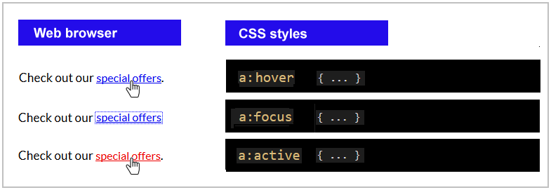
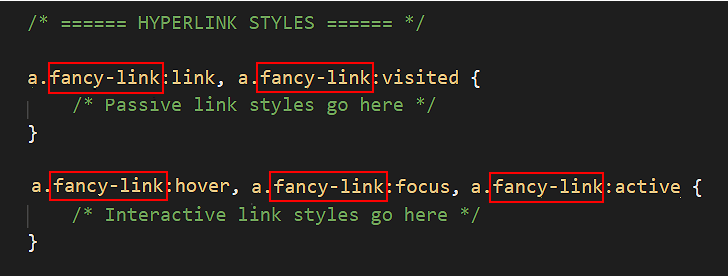
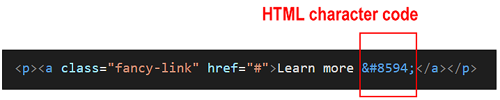
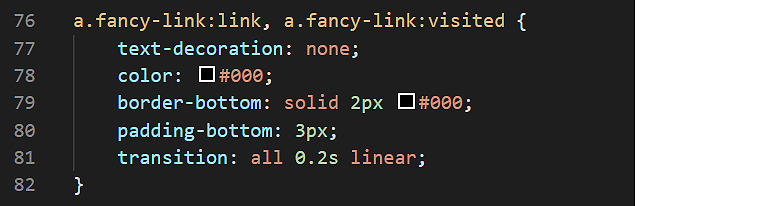

Learning Goals
At the end of this Tutorial you will be able to:
- Apply CSS style rules to the five hyperlink states: link, visited, focus, hover and active.
You can view finished versions of the two sample web pages you will update with hyperlinks in this Tutorial by clicking the links below. The finished samples will each open in a new tab of your web browser.
Abour the five hyperlink states
On modern websites, hyperlinks will typically display very differently depending on the section of the web page in which they are located.
- Navigation hyperlinks: In navigation menus and footers, hyperlinks are commonly shown without underlines. It is clear to the user, from the links’ location, that these items can be clicked or tapped.

- Hyperlinks withing text blocks: When they are located inside paragraphs, however, it is good practice to place underlines beneath hyperlinks to make them stand out from the surrounding text.

- Hyperlinks as buttons: Hyperlinks on a web page can also be displayed as buttons, with coloured backgrounds and/or borders, and perhaps icons. Typically, hyperlinks styled as buttons do not have underlines.

Unlike other web page elements such as headings, paragraphs or images, hyperlinks are interactive. And their visual appearance can change depending on whether and how the user interacts with them.
Hyperlinks are five so-called states, which can be grouped into two categories:
- Passive states: This is how a hyperlink looks when the user is not interacting with it. There are two passive states.
- Interactive states: This is how a hyperlink looks when the user is interacting with it. There are three interactive states.
Hyperlinks: the two passive states
There are two possible passive states for a hyperlink.
- a:link — The link has not been clicked or tapped by the user.
By default, web browsers display unvisited hyperlinks in the colour blue.
- a:visited — The link has been previously clicked or tapped by the user.
By default, web browsers display visited hyperlinks in the colour purple.

In CSS, you target unvisited and visited hyperlinks in a web page using the :link and :visited pseudo-classes as follows:
a:link {
}
a:visited {
}
Typically, these two passive states are styled in the same way.
a:link,
a:visited {
}
Or, on a single line:
a:link, a:visited {
}
Note the colon character (:) between the a selector and the pseudo-class name (link or visited).
For example, if you wanted your hyperlinks to appear in red when the user is not interacting with them, you would enter the following.
a:link, a:visited {
color: red
}
Hyperlinks: the three interactive states
There are three possible passive states for a hyperlink.
- a:hover — The user is hovering the mouse over the link.
By default, web browsers display hovered-over links in blue (if not previously visited) and purple (if visited before by the user).
- a:focus — The user has navigated to the hyperlink by using the Tab key.
By default, web browsers display on-focus links with a blue, dashed border.
- a:active — The link is currently being clicked or tapped by the user.
By default, web browsers show active hyperlinks in the colour red.

In CSS, you target these three hyperlink states using the :focus, :hover and :active pseudo-classes.
Typically, all three interactive states of a hyperlink are styled in the same way.
a:focus, a:hover, a:active {
}
Again, note the colon character (:) between the a selector and the pseudo-class name (focus, hover or active).
For example, if you wanted your hyperlinks to appear in green whenever the user is interacting with them, you would enter the following.
a:hover, a:focus, a:active {
color: green
}
In summary, the section of a CSS file that styles hyperlinks would typically look as follows:
a:link, a:visited {
color: red
}
a:hover, a:focus, a:active {
color: green
}
Hyperlinks: the correct order of pseudo-classes
In a CSS stylesheet, it is important you place your pseudo-classes in the correct order. Otherwise, your hyperlink styles may not display the way you want them to.
The correct order is as follows:
:link
:visited
:hover
:focus
:active
Hyperlinks and CSS classes
You can add classes to hyperlinks just as you can to other HTML elements such as headings and paragraphs.
In the sample stylesheet section below, the selector named .fancy-link is used to style hyperlinks. You need to add the selector five times – once for each of the five possible hyperlink states.

Note that a full stop (.) separates the a selector from the class name of fancy-link.
And a colon (:) separates the fancy-link class name from the pseudo-class name, such as visited, hover or whatever.

Hyperlinks and the default underline
By default, web browsers add an underline to all five hyperlink states. This is the result of a default value of underline applied to the text-decoration property.
To ‘turn off’ this default underline, you need to add the following style rule to your CSS file.
a:link, a:visited {
text-decoration: none;
color: red;
}
a:hover, a:focus, a:active {
text-decoration: none;
color: green;
}
Except for the special cases of hyperlinks in menus and footers, and as buttons, it is good practice to underline the visited and unvisited states of hyperlinks within blocks of text.
However, to underline hyperlinks, web designers typically use the border-bottom property rather than text-decoration, because it allows more options for spacing and colour.
Styling links on the first sample web page
In this section you will apply CSS styles to the hyperlinks you added to the page-5.html sample web page in the previous Introduction to Hyperlinks Tutorial.
- In VS Code, in the page-5.html web page, add the following class to each of the hyperlinks directly under the four images.
class="fancy-link"
 You can add a class name anywhere within the opening tag of a hyperlink. Ensure you separate it from the hyperlink attributes by a single space.
For example, both of these are correct.
You can add a class name anywhere within the opening tag of a hyperlink. Ensure you separate it from the hyperlink attributes by a single space.
For example, both of these are correct.
 But both of these are incorrect. And for the same reason.
But both of these are incorrect. And for the same reason.
 There is no space between the href attribute and the class.
There is no space between the href attribute and the class.
- Display the style-5.css stylesheet.
- At the bottom of the stylesheet flle, copy-and-paste the following:
a.fancy-link:link, a.fancy-link:visited {
text-decoration: none;
padding-bottom: 2px;
}
a.fancy-link:hover, a.fancy-link:focus, a.fancy-link:active {
text-decoration: none;
padding-bottom: 2px;
}
You have now set up a selector for the .fancy-link class, grouped the five possible hyperlink states into two categories for styling, and removed the default underline.
You have also added a spacing of 2px that will separate the hyperlink text from whatever bottom border you place underneath it.
- For the first set of style rules that apply to the :link and :visited hyperlink states, enter the following CSS properties and values:
color: #000;
border-bottom: solid 2px #000;
- For the second set of style rules that apply to three active states of the hyperlink, enter the following CSS properties and values:
color: #f26f21;
border-bottom: solid 2px blue;
- Save your stylesheet. Display the web page in your browser and verify the style changes to the four hyperlinks.

You are now finished working on your first sample web page.
Click page-5.html to view a finished sample of this web page in a new tab of your web browser.
Styling links on a second sample web page
In this section you will apply CSS styles to the hyperlinks you added to the page-10.html sample web page in the previous Introduction to Hyperlinks Tutorial.
- In VS Code, open the page-10.html and style-10.css files.
- In the page-10.html web page, add the fancy-link class to each of the four hyperlinks. You can see an example below:
<p><a class=fancy-link" href="#">Learn more</a></p>
- Save your web page and, in your web browser, verify that the four sections end with a hyperlink are displayed in the default style.
 In this exercise, we are concerned only with the styles of the hyperlinks, not with their destination. If you click any of these four links you have added, the web page will simply reload in the browser.
In this exercise, we are concerned only with the styles of the hyperlinks, not with their destination. If you click any of these four links you have added, the web page will simply reload in the browser.
- In VS Code, display the style-10.css stylesheet.
- At the bottom of the stylesheet file, copy-and-paste the following:
a.fancy-link:link, a.fancy-link:visited {
text-decoration: none;
padding-bottom: 3px;
}
a.fancy-link:hover, a.fancy-link:focus, a.fancy-link:active {
text-decoration: none;
padding-bottom: 3px;
}
You have now set up a selector for the .fancy-link class, grouped the five possible hyperlink states into two categories for styling, and removed the default underline.
You have also added a spacing of 3px that will separate the hyperlink text from whatever bottom border you place underneath it.
- For the first set of style rules that apply to the :link and :visited hyperlink states, enter the following CSS properties and values:
color: #000;
border-bottom: solid 2px #000;
- For the second set of style rules that apply to three active states of the hyperlink, enter the following CSS properties and values:
color: blue;
border-bottom: solid 2px blue;
- Save your stylesheet. Display the web page in your browser and verify the style changes to the four hyperlinks.

Let’s add two further style updates to the hyperlinks on the web page.
- In VS Code, display the page-10.html file.
- For each of the four hyperlinks, add the following HTML character code which represents a right-arrow at the end of ‘Learn more’ text. Enter a single space after the text and before the character:
→

Such character codes always end with a semi-colon (;).
You will find a complete list of HTML character codes at the website below.
A delightful reference for HTML Symbols, Entities and ASCII Character Codes
- Display the style-10.css file.
- To the style rules for the passive states of the .fancy-link selector, add the following new CSS property and value:
transition: all 0.2s linear;
This adds a smooth transition effect as your hyperlinks change from their passive to active states and vice versa.
Your complete set of style rules for the passive states of the .fancy-link selector should nowlook as follows.

- Save your web page and stylesheet, and verify your updates display and work correctly.

You are now finished working on your second sample web page.
Click page-10.html to view a finished sample of this web page in a new tab of your web browser.
Uploading your files to GitHub
Upload the following web pages and stylesheets to your account on GitHub:
page-5.html
style-5.css
page-10.html
style-10.css
Your web pages will be published at web addresses similar to the following:
https://username.github.io/page-5.html
https://username.github.io/page-10.html
It may take a few minutes for your uploaded files to appear on GitHub.